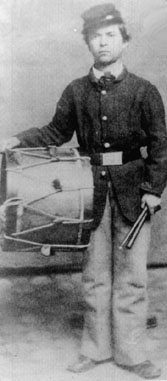

 |
| NAME: Willard Wheeler Nye BORN: 1846 DIED: 1938 ALLEGIANCE: Union HIGHEST RANK: Drummer Boy UNIT: 23rd Illinois Infantry, 8th Kansas Infantry, 139th Illinois infantry SERVICE RECORD: Enlisted in 23rd Illinois August 1, 1861. Captured on September 20. Paroled. Enlisted in 8th Kansas on December 1. Honorably discharged due to illness on December 24, 1863. Enlisted in 139th Illinois on May 13, 1864. Mustered out on October 28. |
Less than two months later, Nye was captured. Besieged at Lexington, Missouri, his regiment waited five days for reinforcements that never came. On September 20 the Illinoisans surrendered and shortly thereafter were paroled.
After a short visit home, Nye signed up again, with his friend Captain Edgar Trego. All Illinois units being full, they joined the 8th Kansas Infantry. The two served together on garrison and provost duty, then left for the front in Kentucky. They fought together until September 1863 and the Battle of Chickamauga. Trego kept a protective eye on Nye throughout the fighting of that day and took him along on an evening sortie to collect wounded men from the field. During the excursion, Trego was killed by a sharpshooter's bullet. Nye, devastated by the loss, packed Trego's belongings for shipment back to his widow. With the package he enclosed a note: "Captain Trego was a brave soldier, a fine man and a splendid gentleman. He was always good to me."
Nye continued to serve during the siege of Chattanooga and in the battles around
that city in November, where he was often called upon to carry wounded and assist
the surgeon. In December, exhaustion, poor rations, and bad weather took their
toll on the diminutive drummer boy. He fell ill and was discharged from duty. After
four months of recuperation at home, he enlisted as a 100-day volunteer in the 139th
Illinois. He served on garrison duty until he was finally mustered out in October
1864.
At the close of the war, Nye returned to school. He became a medical doctor and
eventually settled in Hiawatha, Kansas, where the "Little Doctor" (even as an adult
he was barely over five feet tall) became a respected member of the community until
his death in 1938 at the age of 92.